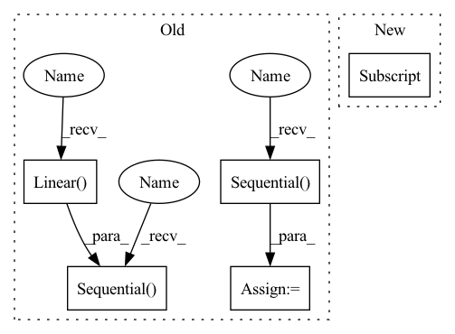

Pattern ID :52
Before Change
self.__initial_width = img_shape[1] // (2 ** n_adain_layers)
self.__adain_dim = adain_dim
self.fc_layers = nn.Sequential(
nn.Linear(
in_features=content_dim,
out_features=self.__initial_height * self.__initial_width * (adain_dim // 8)
),
nn.LeakyReLU(),
nn.Linear(
in_features=self.__initial_height * self.__initial_width * (adain_dim // 8),
out_features=self.__initial_height * self.__initial_width * (adain_dim // 4)
) ,
nn.LeakyReLU(),
nn.Linear(
in_features=self.__initial_height * self.__initial_width * (adain_dim // 4),
out_features=self.__initial_height * self.__initial_width * adain_dim
),
nn.LeakyReLU()
)
self.adain_conv_layers = nn.ModuleList()
for i in range(n_adain_layers):
self.adain_conv_layers += [
nn.Upsample(scale_factor=(2, 2)),
nn.Conv2d(in_channels=adain_dim, out_channels=adain_dim, padding=1, kernel_size=3),
nn.LeakyReLU(),
AdaptiveInstanceNorm2d(adain_layer_idx=i)
]
self.adain_conv_layers = nn.Sequential(*self.adain_conv_layers)
self.last_conv_layers = nn .Sequential(
nn.Conv2d(in_channels=adain_dim, out_channels=64, padding=2, kernel_size=5),
nn.LeakyReLU(),
nn.Conv2d(in_channels=64, out_channels=img_shape[2], padding=3, kernel_size=7),
nn.Sigmoid()
)
def assign_adain_params(self, adain_params):
for m in self.adain_conv_layers.modules():
if m.__class__.__name__ == "AdaptiveInstanceNorm2d":After Change
self.content_embedding = nn.Embedding(config["n_imgs"], config["content_dim"], config["content_std"])
self.class_embedding = nn.Embedding(config["n_classes"], config["class_dim"])
self.modulation = Modulation(config["class_dim"] , config["n_adain_layers"], config["adain_dim"])
self.decoder = Decoder(config["content_dim"], config["n_adain_layers"], config["adain_dim"], config["img_shape"])
def forward(self, img_id, class_id):In pattern: SUPERPATTERN
Frequency: 4
Non-data size: 5
Instances Fragment ID: 211075
Project Name: avivga/overlord
Commit Name: 5003297b3925f6c55beefdcd29353d4389f68d30
Time: 2020-05-12
Author: avivga@gmail.com
File Name: model/modules.py
M Class Name: Generator
N Class Name: Generator
M Method Name: __init__(2)
N Method Name: __init__(5)
M Parent Class: nn.Module
N Parent Class: nn.Module
M File Name: model/modules.py
N File Name: model/modules.py
M Start Line: 71
M End Line: 118
N Start Line: 8
N End Line: 16
Before Change
self.__initial_width = img_shape[1] // (2 ** n_adain_layers)
self.__adain_dim = adain_dim
self.fc_layers = nn.Sequential(
nn.Linear(
in_features=content_dim,
out_features=self.__initial_height * self.__initial_width * (adain_dim // 8)
),
nn.LeakyReLU(),
nn.Linear(
in_features=self.__initial_height * self.__initial_width * (adain_dim // 8),
out_features=self.__initial_height * self.__initial_width * (adain_dim // 4)
),
nn.LeakyReLU(),
nn.Linear(
in_features=self.__initial_height * self.__initial_width * (adain_dim // 4),
out_features=self.__initial_height * self.__initial_width * adain_dim
) ,
nn.LeakyReLU()
)
self.adain_conv_layers = nn.ModuleList()
for i in range(n_adain_layers):
self.adain_conv_layers += [
nn.Upsample(scale_factor=(2, 2)),
nn.Conv2d(in_channels=adain_dim, out_channels=adain_dim, padding=1, kernel_size=3),
nn.LeakyReLU(),
AdaptiveInstanceNorm2d(adain_layer_idx=i)
]
self.adain_conv_layers = nn.Sequential(*self.adain_conv_layers)
self.last_conv_layers = nn.Sequential(
nn.Conv2d(in_channels=adain_dim, out_channels=64, padding=2, kernel_size=5),
nn.LeakyReLU(),
nn.Conv2d(in_channels=64, out_channels=img_shape[2], padding=3, kernel_size=7),
nn.Sigmoid()
)
def assign_adain_params(self, adain_params):
for m in self.adain_conv_layers.modules():
if m.__class__.__name__ == "AdaptiveInstanceNorm2d":After Change
self.content_embedding = nn.Embedding(config["n_imgs"], config["content_dim"], config["content_std"])
self.class_embedding = nn.Embedding(config["n_classes"], config["class_dim"])
self.modulation = Modulation(config["class_dim"], config["n_adain_layers"], config["adain_dim"])
self.decoder = Decoder(config["content_dim"], config["n_adain_layers"], config["adain_dim"], config["img_shape"] )
def forward(self, img_id, class_id):
content_code = self.content_embedding(img_id) Fragment ID: 211073
Project Name: avivga/overlord
Commit Name: 5003297b3925f6c55beefdcd29353d4389f68d30
Time: 2020-05-12
Author: avivga@gmail.com
File Name: model/modules.py
M Class Name: Generator
N Class Name: Generator
M Method Name: __init__(2)
N Method Name: __init__(5)
M Parent Class: nn.Module
N Parent Class: nn.Module
M File Name: model/modules.py
N File Name: model/modules.py
M Start Line: 71
M End Line: 118
N Start Line: 8
N End Line: 16
Before Change
super(AddonNN, self).__init__()
// keep everything but the last layer
self.featurizer = nn.Sequential( *list(model.classifier.children())[:-1])
// freeze the featurizer
for param in self.featurizer.parameters():
param.requires_grad_ = False
// create small network that will take features as input
// TODO: got to figure out what is input size
self.addon_nn = nn.Sequential(
nn.Linear( feat_size, 4096) ,
nn.ReLU(),
nn.Linear(4096, 4096),
nn.ReLU(),
nn.Linear(4096, num_classes))
def forward(self, x: torch.Tensor) -> torch.Tensor:
// pass through the original network up to the penultimate layerAfter Change
param.requires_grad = False
// create small network that will take features as input
self.addon_nn = nn.Linear(self.FEAT_SIZE[stack_num] , num_classes)
def forward(self, x: torch.Tensor) -> torch.Tensor: Fragment ID: 211099
Project Name: microsoft/archai
Commit Name: 16a8b37ef55c82318b3c89402322a1a36f063113
Time: 2022-12-16
Author: dedey@microsoft.com
File Name: archai/algos/proxynas/addon_nn.py
M Class Name: AddonNN
N Class Name: AddonNN
M Method Name: __init__(4)
N Method Name: __init__(4)
M Parent Class: nn.Module
N Parent Class: nn.Module
M File Name: archai/algos/proxynas/addon_nn.py
N File Name: archai/algos/proxynas/addon_nn.py
M Start Line: 12
M End Line: 29
N Start Line: 8
N End Line: 23
Before Change
)
self.projection = nn.Sequential(
nn.Linear(in_features=config["content_dim"], out_features=256),
nn.LeakyReLU(negative_slope=0.2),
nn.Linear(in_features=256, out_features=256 * self.initial_size * self.initial_size) ,
nn.LeakyReLU(negative_slope=0.2)
)
self.decoder = nn.Sequential(
AdainResBlk(dim_in=256, dim_out=256, style_dim=config["style_dim"], upsample=False),
AdainResBlk(dim_in=256, dim_out=256, style_dim=config["style_dim"], upsample=False),
AdainResBlk(dim_in=256, dim_out=256, style_dim=config["style_dim"], upsample=True),
AdainResBlk(dim_in=256, dim_out=256, style_dim=config["style_dim"], upsample=True),
AdainResBlk(dim_in=256, dim_out=128, style_dim=config["style_dim"], upsample=True),
AdainResBlk(dim_in=128, dim_out=64, style_dim=config["style_dim"], upsample=True)
)
self.to_rgb = nn.Sequential(
nn.InstanceNorm2d(num_features=64, affine=True),
nn.LeakyReLU(negative_slope=0.2),
nn.Conv2d(in_channels=64, out_channels=3, kernel_size=1, stride=1, padding=0),
nn.Tanh()
)
self.apply(he_init)
def forward(self, content_img_id, style_code, class_id):After Change
)
self.modulation = Modulation(config["style_dim"], n_adain_layers=4, adain_dim=256)
self.decoder = Decoder(config["content_dim"] , n_adain_layers=4, adain_dim=256, img_shape=config["img_shape"])
self.apply(self.weights_init)
Fragment ID: 211019
Project Name: avivga/overlord
Commit Name: 5fdf4019e9ff74b0574e25f5c6e8dc6a5e588cbe
Time: 2020-05-23
Author: avivga@gmail.com
File Name: model/modules.py
M Class Name: Generator
N Class Name: Generator
M Method Name: __init__(2)
N Method Name: __init__(2)
M Parent Class: nn.Module
N Parent Class: nn.Module
M File Name: model/modules.py
N File Name: model/modules.py
M Start Line: 16
M End Line: 56
N Start Line: 29
N End Line: 32
Before Change
self.feat1 = Mlp(in_channels=c[0], in_features=f[0], out_channels=c[1], out_features=f[1])
self.acvt1 = nn.Sequential(nn.BatchNorm1d(c[1]), nn.Softsign())
self.feat2 = Mlp(in_channels=c[1], in_features=f[1], out_channels=c[2], out_features=f[2])
self.acvt2 = nn.Sequential( nn.BatchNorm1d(c[2]), nn.Softsign())
self.classifier = nn.Sequential( nn.Flatten(), nn.Dropout(p=0.1), nn.Linear( c[2]*f[2], num_class))
def forward(self, x, neighbor):
if not self.ismlp:
//// Temp LGL works for k =1 //// TODO this can be merge with KLGLAfter Change
//// the Flag ismlp will encode without neighbor
super(LGL, self).__init__()
self.ismlp = ismlp
c = [1, 4, hidden[1] ]
f = [feat_len, 16, 1]
self.feat1 = FeatTrans1d(in_channels=c[0], in_features=f[0], out_channels=c[1], out_features=f[1]) Fragment ID: 211098
Project Name: wang-chen/lgl
Commit Name: dd8f35ac79c1dcb4107c1d6bf229349c6f2ee91f
Time: 2021-05-19
Author: yuhengq@andrew.cmu.edu
File Name: models/lgl.py
M Class Name: LGL
N Class Name: LGL
M Method Name: __init__(5)
N Method Name: __init__(4)
M Parent Class: nn.Module
N Parent Class: nn.Module
M File Name: models/lgl.py
N File Name: models/lgl.py
M Start Line: 38
M End Line: 55
N Start Line: 37
N End Line: 48